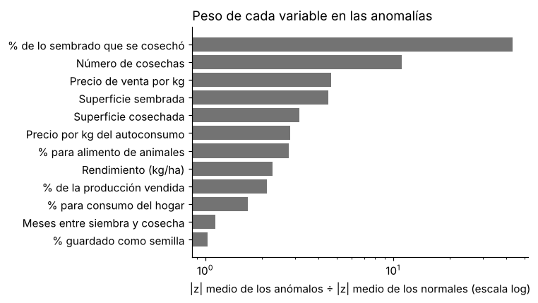
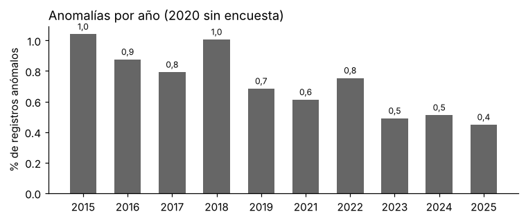
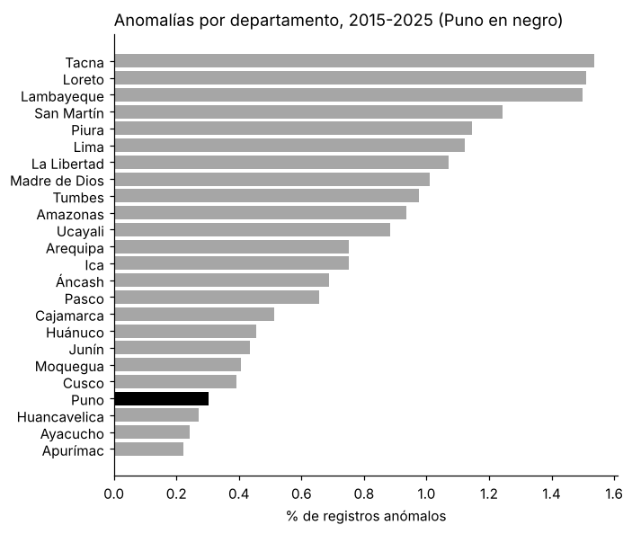
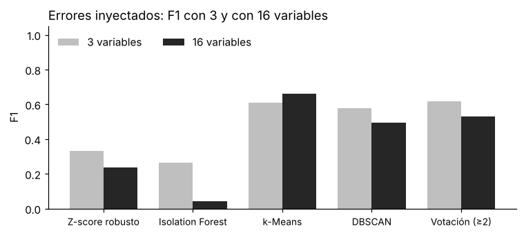
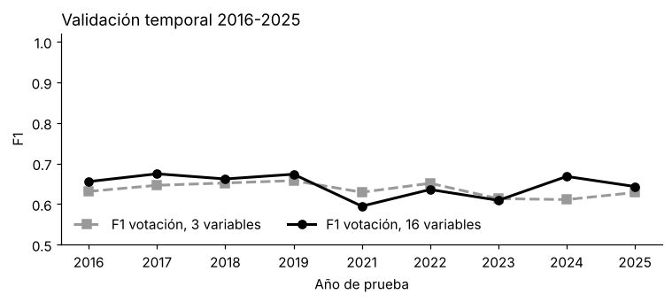

Detección de anomalías en la producción agrícola del Perú
Encuesta Nacional Agropecuaria (ENA) 2014–2025
Se detectan, sin etiquetas, registros de producción agrícola que se apartan de lo normal para su mismo cultivo, año y región en 1 250 818 registros de la ENA 2015–2025. Se comparan un modelo base de 3 variables y uno ampliado de 16, con z-score robusto, DBSCAN, k-Means e Isolation Forest combinados por votación. La votación marca el 0,70 % de los registros. Con errores inyectados y validación año por año, el modelo de 16 variables ordena mejor a los sospechosos (AUC ≈ 0,94 frente a 0,77) con un F1 similar.
anomalías, ENA, INEI, Isolation Forest, DBSCAN, k-Means, datos abiertos
1 Problema
La Encuesta Nacional Agropecuaria (ENA) del INEI registra cada año, para cada productor, los cultivos que cosechó: superficie, producción y lo que vendió con su precio (Instituto Nacional de Estadística e Informática, 2025). Los datos se recogen en campo y se digitan a mano, así que pueden traer errores: un cero de más, kilos anotados como toneladas o una superficie en metros cuadrados en lugar de hectáreas.
Objetivo. Detectar de forma automática, sin etiquetas, los registros que se apartan mucho de lo normal para su mismo cultivo, año y región, y validar la detección con todo el rango de años disponible. El análisis es nacional; Puno se presenta como caso. Todo el proceso está en funciones de Python (ena_anomalias.py) y se ejecuta en el notebook Deteccion_Anomalias_ENA_2015_2025.ipynb; las etapas 3 a 5 también están en R para RStudio (Código en R).
2 Datos
| Fuente | Contenido | Tamaño |
|---|---|---|
| ENA 2014–2024 (SPSS) | Todos los capítulos apilados; se leen 43 columnas | 14,7 GB · 3 843 598 filas · 1 704 variables |
| ENA 2025 (21 zip) | Un CSV por capítulo; cultivos en 03_CAP200AB.csv (módulo 1895) |
158 747 filas de cultivos |
| Unidad de análisis | Un cultivo cosechado por un productor en una parcela y un año (capítulo 200) | 1 250 818 registros útiles |
No existe la ENA 2020 (no se realizó por la pandemia) y en 2014 el INEI no publicó superficie, cantidad ni valor de venta. Por eso 2014 entra en la integración y la limpieza, pero el modelo trabaja con 2015–2025 (10 años).
3 Proceso por etapas
| Etapa | Qué hace | Funciones |
|---|---|---|
| 1. Carga e integración | Lee solo las columnas necesarias del SPSS y del CSV 2025 y las une | leer_sav, agregar_factor_parcela, leer_2025, integrar |
| 2. Limpieza | Filtra, reconstruye cifras, convierte unidades y quita duplicados | limpiar |
| 3. Variables | 16 variables (12 numéricas + 4 categóricas) comparadas con su cultivo, año y región | crear_variables, z_robusto, desvio_grupo |
| 4. Modelos | Cuatro detectores y votación | detectar_z, detectar_dbscan, detectar_kmeans, detectar_iforest, detectar_todo |
| 5. Validación | Silueta, reglas lógicas, errores inyectados y validación año por año | validar_silueta, validar_reglas, validar_inyeccion, validar_temporal |
3.1 Integración: la superficie en hectáreas
El productor declara la superficie en la unidad local de su parcela (m², topos, yugadas…). El INEI publica la conversión a hectáreas salvo en 2015 y 2018. Usada tal cual, el 12 % de los registros parece anómalo solo por la unidad. Para esos dos años reconstruimos las hectáreas con un factor por parcela (hectáreas de la parcela ÷ superficie en su unidad). En los años con dato oficial, el método coincide en el 100 % de 783 865 registros comparados.
3.2 Limpieza
| Paso | Registros que quedan |
|---|---|
| Filas con nombre de cultivo (todas las secciones) | 1 658 156 |
| Cultivos cosechados (sección 200A, con N° de cultivo) | 1 493 391 |
| Solo encuestas completas (RESFIN = 1) | 1 492 147 |
| Sin 2014 (sin cantidades ni superficies) | 1 413 650 |
| Con superficie, cantidad y equivalencia en kg | 1 267 692 |
| Sin códigos de relleno (145 eliminados) | 1 267 547 |
| Superficie y producción mayores que cero | 1 267 547 |
| Sin duplicados | 1 267 083 |
| Cultivos con 30 registros o más en el año | 1 250 818 |
El SPSS declara UTF-8 pero trae bytes inválidos (se lee en latin1); las cifras vienen partidas en entero y decimales como texto ('069' = 0,069); la producción se pasa a kilogramos con la equivalencia de cada unidad (saco, arroba, quintal…).
3.3 Variables: de 3 a 16
| # | Variable | Cálculo | Transformación |
|---|---|---|---|
| 1 | Rendimiento* | kg ÷ ha cosechadas | z robusto del log |
| 2 | Precio de venta por kg* | valor ÷ kg vendidos | z robusto del log |
| 3 | Superficie cosechada* | ha | z robusto del log |
| 4 | Superficie sembrada | ha | z robusto del log |
| 5 | % de lo sembrado que se cosechó | ha cosechadas ÷ ha sembradas | desvío del grupo |
| 6 | % de la producción vendida | vendida ÷ producida | desvío del grupo |
| 7 | % para consumo del hogar | consumida ÷ producida | desvío del grupo |
| 8 | % para alimento de animales | a animales ÷ producida | desvío del grupo |
| 9 | % guardado como semilla | semilla ÷ producida | desvío del grupo |
| 10 | Número de cosechas | P205 | desvío del log |
| 11 | Precio por kg del autoconsumo | valor consumo ÷ kg | z robusto del log |
| 12 | Meses entre siembra y cosecha | cosecha − siembra | desvío del grupo |
| 13–16 | Tipo de cultivo, conducción, fuente de agua, región natural | — | categóricas (0/1) |
Las continuas se pasan a logaritmo y a un z robusto, \(z = (x - \text{mediana}) / (1{,}4826 \cdot \text{MAD})\), dentro del mismo cultivo, año y región natural. En proporciones y conteos la MAD suele ser 0, por eso se usa el desvío a la mediana del grupo dividido entre la desviación estándar global. Un dato faltante queda en 0 (neutral). La correlación más alta entre dos variables numéricas es 0,73.
3.4 Modelos
Se usan los cuatro métodos del artículo de referencia (Herreros-Martı́nez et al., 2024), combinados por votación:
- Z-score robusto: anómalo si una variable continua supera \(|z| = 3{,}5\) (Iglewicz & Hoaglin, 1993).
- DBSCAN (Ester et al., 1996): anómalo si queda como ruido. Se ajusta con una muestra de 40 000 (eps = percentil 98 de la curva k-distancia, 20 vecinos) y cada registro se clasifica por su distancia al punto núcleo más cercano.
- k-Means: anómalo si está en el 1 % más lejano de su centroide; k = 3 (mejor silueta, 0,11).
- Isolation Forest (Liu et al., 2008): 200 árboles, 1 % de contaminación.
- Votación: anomalía final si la marcan dos o más métodos.
4 Resultados
De 1 250 818 registros, la votación marca 8 802 como anómalos (0,70 %). Los modelos de 3 y 16 variables comparten 4 003 anomalías.

El % de lo sembrado que se cosechó y el número de cosechas son las variables que más separan a los anómalos; siguen el precio de venta y la superficie sembrada.

La tasa baja de 1,04 % en 2015 a 0,45 % en 2025, lo que sugiere que la captura de datos mejoró.

Tacna, Loreto, Lambayeque, San Martín y Piura tienen más anomalías (costa y selva, hortalizas de varias cosechas y cultivos comerciales). Los de sierra (Apurímac, Ayacucho, Huancavelica, Puno) tienen las tasas más bajas. Por cultivo destacan el maíz chala (4,3 %), el arroz cáscara, la yuca y el orégano.
4.1 Caso Puno
Puno aporta 79 148 registros y 240 anomalías (0,30 %), la cuarta tasa más baja del país. Aparecen cultivos andinos: papa nativa (41), avena forrajera (23) y quinua (19), además de la coca (23).
| Año | Cultivo | Ha cosech. | Producción (kg) | Rend. (kg/ha) | Precio (S/ kg) | Cosechas | Votos |
|---|---|---|---|---|---|---|---|
| 2022 | Rocoto | 0,010 | 30 | 3 000 | – | 1 | 4 |
| 2022 | Rocoto | 0,001 | 7 | 7 000 | – | 1 | 4 |
| 2022 | Pasto Dactylis | 0,160 | 8 000 | 50 000 | 0,50 | 1 | 4 |
| 2022 | Pasto Brizanta | 0,200 | 1 000 | 5 000 | 0,50 | 1 | 4 |
| 2015 | Espinaca | 0,000 | 1 | 5 000 | – | 1 | 3 |
| 2015 | Rocoto | 0,020 | 135 | 6 750 | – | 3 | 3 |
Una anomalía no prueba un error: es un registro que conviene revisar con alguien que conozca el cultivo.
5 Disponibilidad de datos

Fuente primaria. Microdatos oficiales de la Encuesta Nacional Agropecuaria del INEI: archivo SPSS 2014–2024 y archivos CSV de 2025 (módulo 1895), descargables en el portal de microdatos del INEI (Instituto Nacional de Estadística e Informática, 2025). Los microdatos crudos no se redistribuyen en el repositorio por su tamaño (14,7 GB).
Base procesada y código. La base consolidada ena_2014_2025_productor.csv.gz (1 329 315 registros, 33 variables, sin identificadores de productor), su diccionario de variables, las tablas de resultados y el código en Python y en R están depositados en Zenodo con identificador persistente:
DOI: 10.5281/zenodo.24375916 · Código fuente: GitHub
Licencias: datos CC BY 4.0 y código MIT. Detalle de columnas en Datos y código.
Cómo citar los datos: Flores Flores et al. (2026).
6 Validación: 3 contra 16 variables
No hay una lista oficial de registros erróneos. Se valida de cuatro formas, de la más débil a la más fuerte.
6.1 Silueta
| Partición (16 variables) | Silueta |
|---|---|
| k-Means (k = 3) | 0,110 |
| Normal vs anómalo: Z-score robusto | 0,352 |
| Normal vs anómalo: Isolation Forest | 0,307 |
| Normal vs anómalo: k-Means | 0,638 |
| Normal vs anómalo: DBSCAN | 0,614 |
| Normal vs anómalo: Votación (≥ 2) | 0,591 |
Con 16 variables los grupos de k-Means casi no se separan (0,11; con 3 era 0,26), efecto de la dimensionalidad. La silueta solo mide separación, no que las anomalías sean errores.
6.2 Reglas lógicas
R1 (vendió más de lo que cosechó) tiene 0 casos y R2 (cosechó más de lo que sembró) 3, señal de que el INEI ya depura esas inconsistencias. R3 (valor de venta ≠ cantidad × precio) tiene 206 casos:
| Método | Detecta (3 var.) | Lift (3) | Detecta (16 var.) | Lift (16) |
|---|---|---|---|---|
| Z-score robusto | 14,1 % | 5,6 | 18,0 % | 6,2 |
| Isolation Forest | 12,1 % | 12,2 | 3,4 % | 3,4 |
| k-Means | 11,7 % | 11,7 | 6,8 % | 6,8 |
| DBSCAN | 12,1 % | 12,4 | 9,7 % | 15,9 |
| Votación (≥ 2) | 13,1 % | 10,1 | 10,7 % | 15,2 |
6.3 Errores inyectados
Al 1 % de los registros normales se le inyectan cinco errores de digitación: A) producción × 10, B) kg ↔︎ t, C) valor × 10, D) sembrada × 10 y E) cosechas × 10.
| Método | F1 (3) | AUC (3) | Precisión (16) | Recall (16) | F1 (16) | AUC (16) |
|---|---|---|---|---|---|---|
| Z-score robusto | 0,333 | 0,797 | 0,152 | 0,543 | 0,238 | 0,829 |
| Isolation Forest | 0,266 | 0,791 | 0,043 | 0,042 | 0,042 | 0,752 |
| k-Means | 0,609 | 0,799 | 0,670 | 0,654 | 0,662 | 0,981 |
| DBSCAN | 0,579 | 0,775 | 0,858 | 0,348 | 0,495 | 0,931 |
| Votación (≥ 2) | 0,617 | 0,764 | 0,944 | 0,368 | 0,530 | 0,949 |

El modelo de 3 variables no ve los errores D y E (0 %); con 16, k-Means detecta casi todos (100 % y 99 %). Isolation Forest no aprovecha las variables extra (F1 0,04) y arrastra a la votación (F1 0,53 frente a 0,62), aunque su AUC sube de 0,76 a 0,95.
6.4 Validación temporal 2016–2025
Se entrena con los años anteriores y se prueba en el siguiente, con los errores inyectados en el año de prueba.
| Año de prueba | Entrenado con | F1 (3) | AUC (3) | F1 (16) | AUC (16) |
|---|---|---|---|---|---|
| 2016 | 2015 | 0,631 | 0,761 | 0,655 | 0,951 |
| 2017 | 2015–2016 | 0,646 | 0,777 | 0,674 | 0,957 |
| 2018 | 2015–2017 | 0,652 | 0,776 | 0,662 | 0,954 |
| 2019 | 2015–2018 | 0,658 | 0,777 | 0,673 | 0,953 |
| 2021 | 2015–2019 | 0,629 | 0,764 | 0,595 | 0,955 |
| 2022 | 2015–2021 | 0,651 | 0,777 | 0,636 | 0,949 |
| 2023 | 2015–2022 | 0,613 | 0,758 | 0,609 | 0,899 |
| 2024 | 2015–2023 | 0,611 | 0,753 | 0,668 | 0,936 |
| 2025 | 2015–2024 | 0,628 | 0,757 | 0,643 | 0,942 |

El F1 medio es casi igual (0,64 con 3 variables y 0,65 con 16), pero el AUC con 16 es mucho mayor (≈ 0,94 frente a ≈ 0,77). El resultado es estable año a año.
7 Comparación con el artículo de referencia
| Aspecto | Artículo | Este trabajo |
|---|---|---|
| Datos | 65 000 órdenes de compra, 2 empresas, 1 año | 1,25 millones de registros, 25 departamentos, 10 años |
| Variables | Monto y atributos de la orden | 16 (12 numéricas + 4 categóricas) vs. base de 3 |
| Contexto | Monto global | z robusto por cultivo, año y región |
| Validación | Silueta + revisión de expertos | Silueta + reglas + errores inyectados + validación temporal |
8 Conclusiones
- La limpieza fue decisiva: sin convertir la superficie a hectáreas, el 12 % de los registros parecía anómalo. La reconstrucción de 2015 y 2018 coincide al 100 % con el INEI en los demás años.
- Con 16 variables la votación marca el 0,70 % de los registros; pesan más el % de lo sembrado que se cosechó y el número de cosechas.
- Más variables no siempre es mejor: k-Means mejora (F1 0,66, AUC 0,98) e Isolation Forest empeora. Se recomienda usar las 16 variables con k-Means o con la votación y revisar primero los registros con más votos.
- La silueta sola no basta; los errores inyectados y la validación temporal sí miden precisión y recall.
Limitaciones. No hay ENA 2020, 2014 no trae cantidades y 2021 no trae fecha de siembra. Los errores inyectados son simulados. No se usaron factores de expansión, porque el interés está en el registro individual.